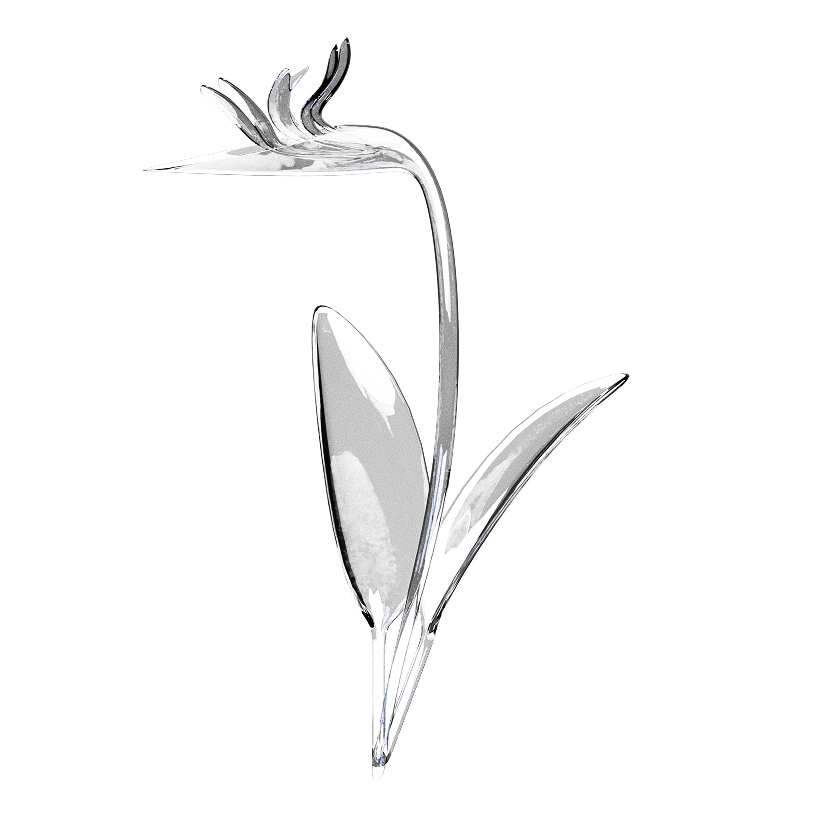
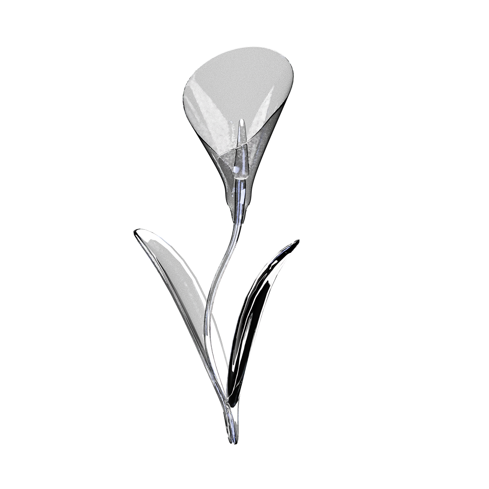
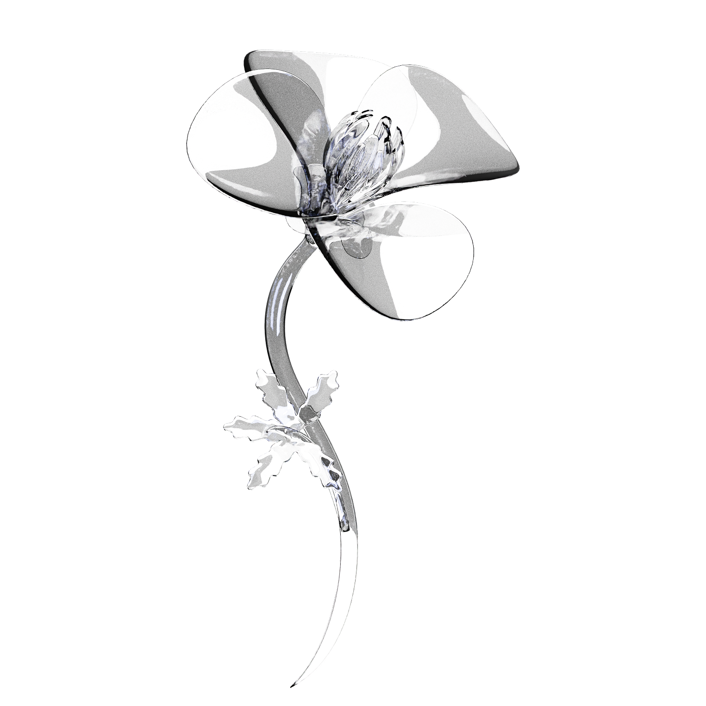
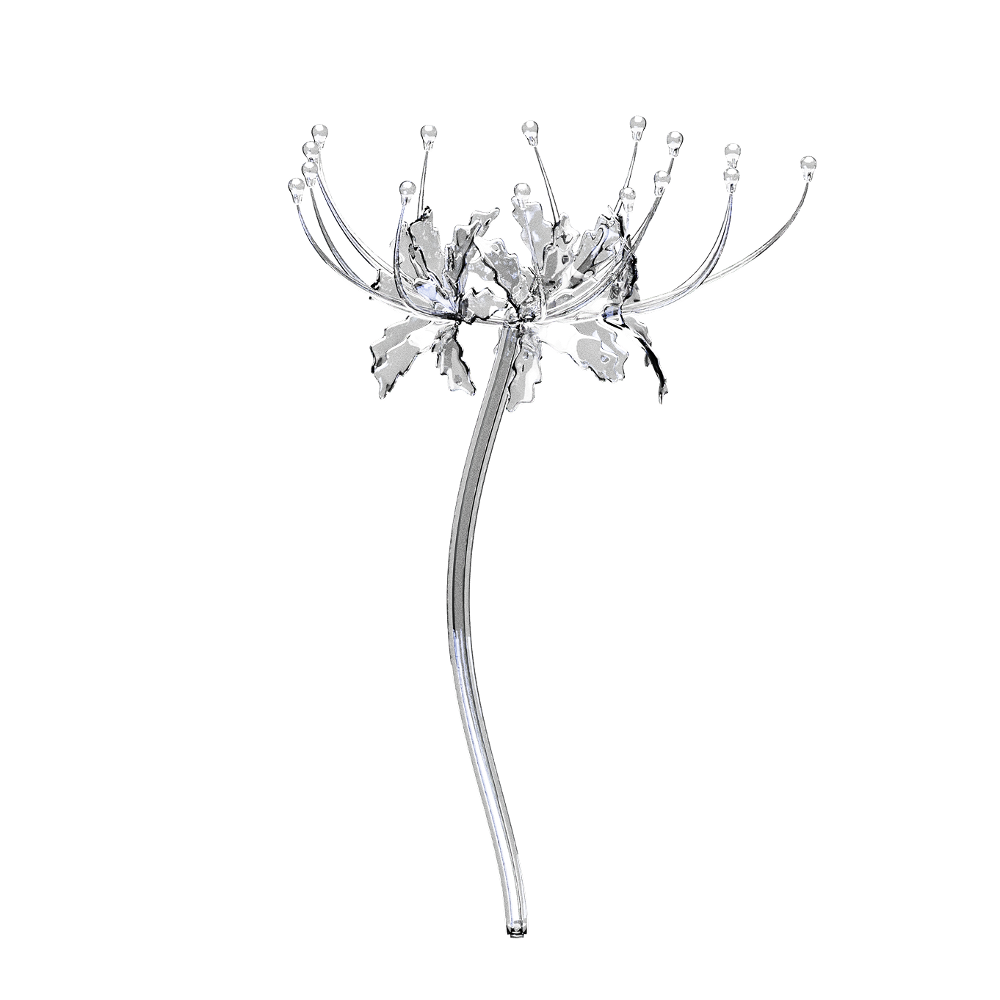
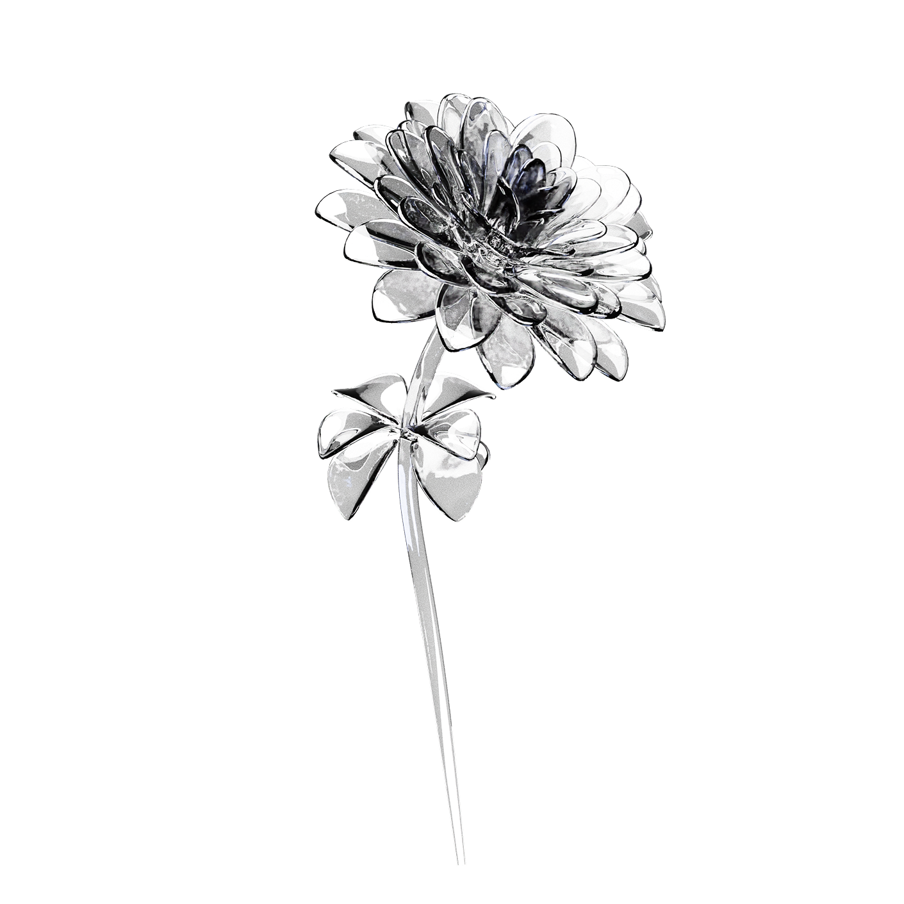
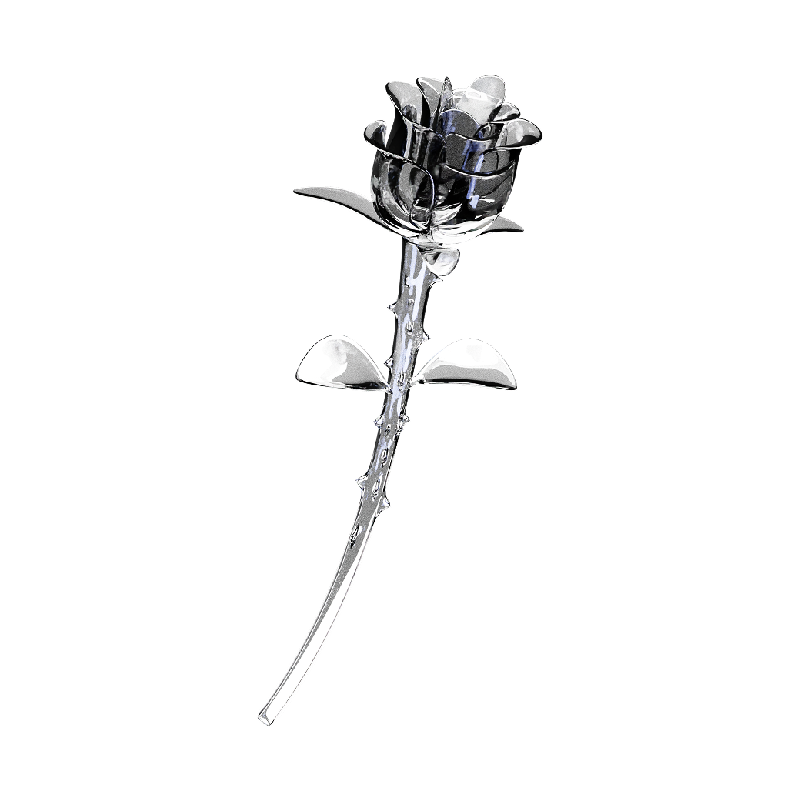
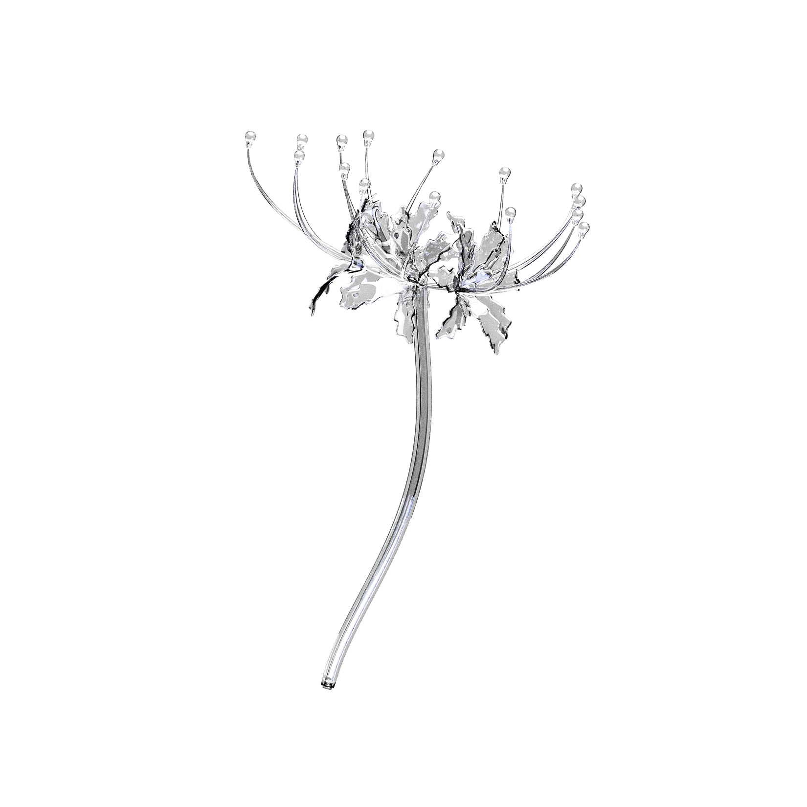
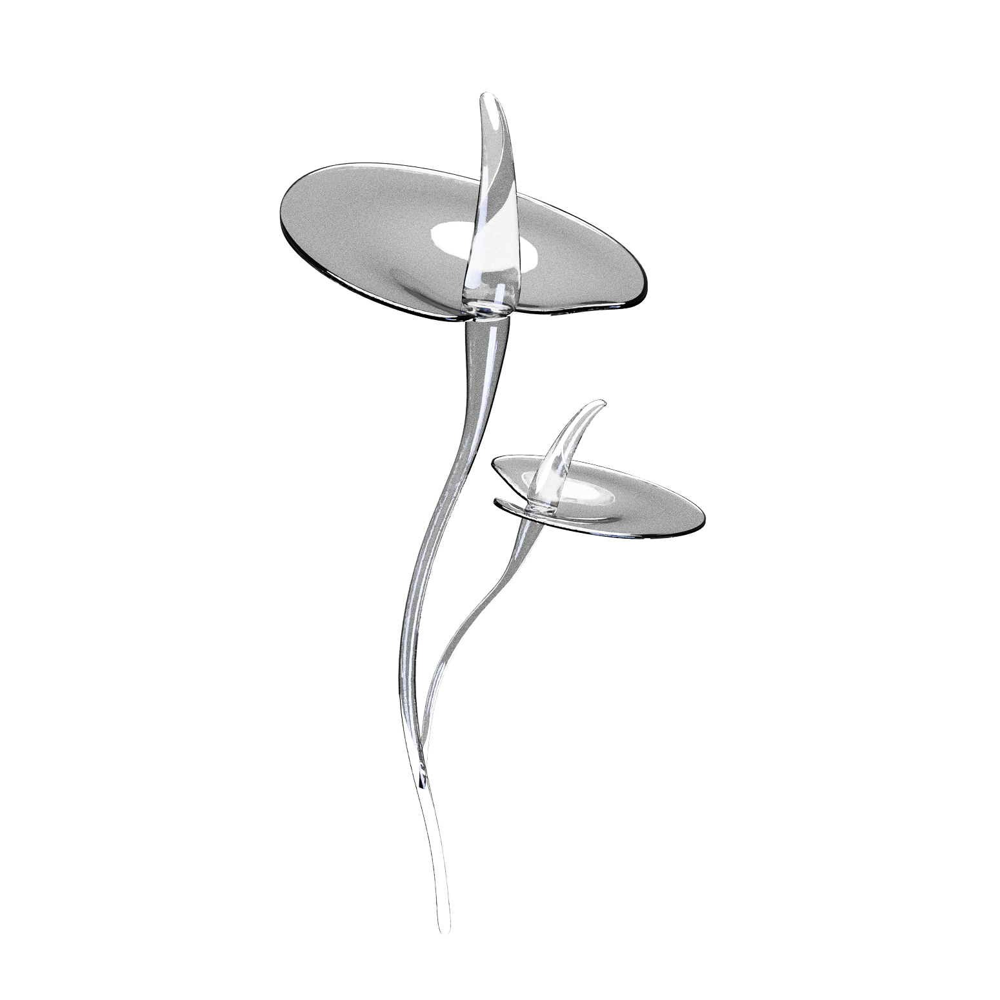
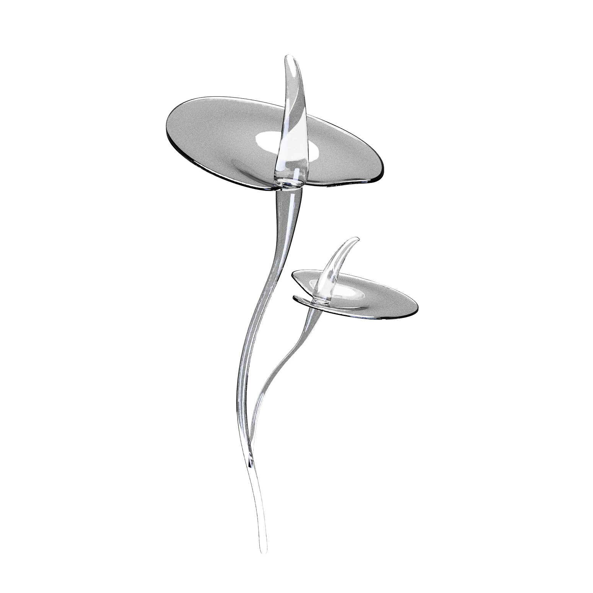
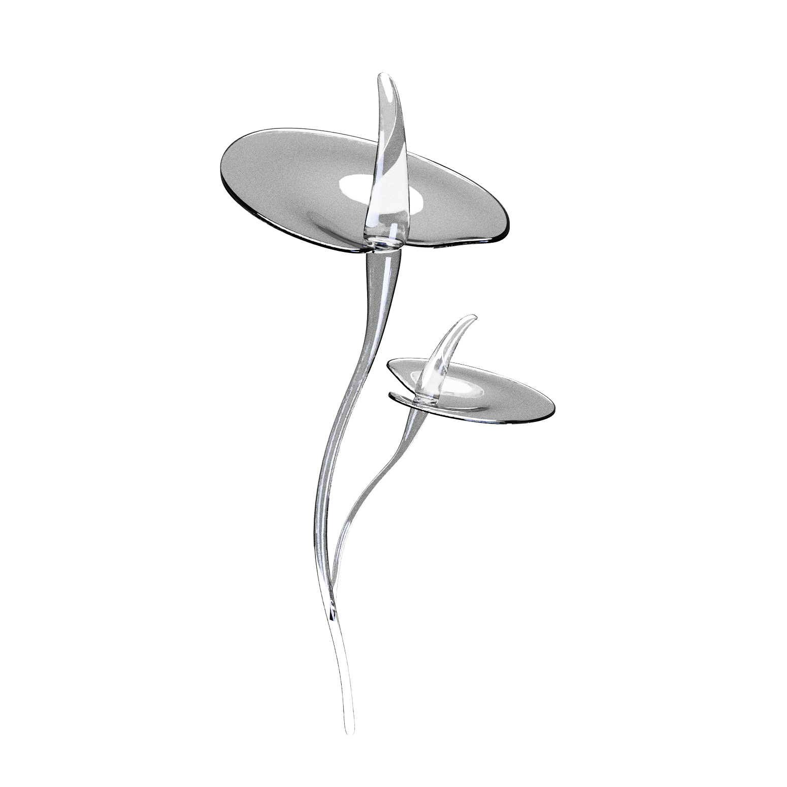

KARAMBOL
Поможем с безопасностью питомца
        

ABOUT US
Этот медиа-сервис поможет владельцам домашних животных
узнать об потенциальных опасностях в своем доме.
Наша команда поддерживает высокий уровень качества
достоверной информации, старается донести ее не только
через этот сервис, но и другие медиа платформы.